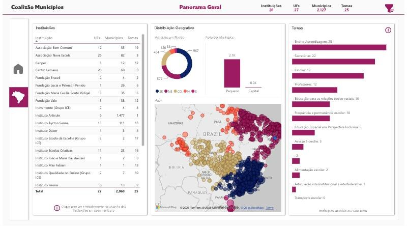
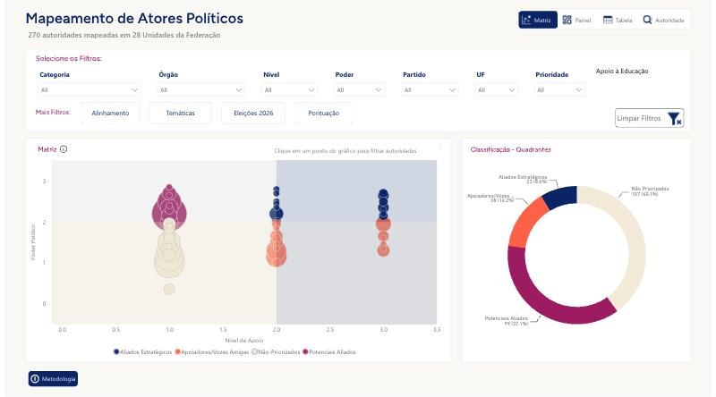
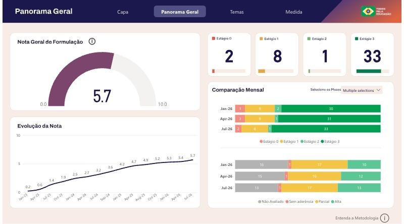
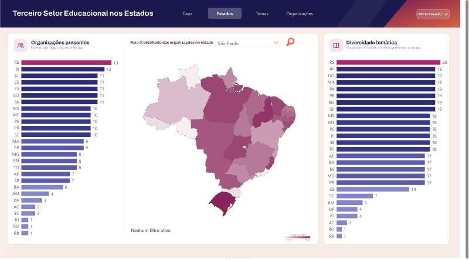
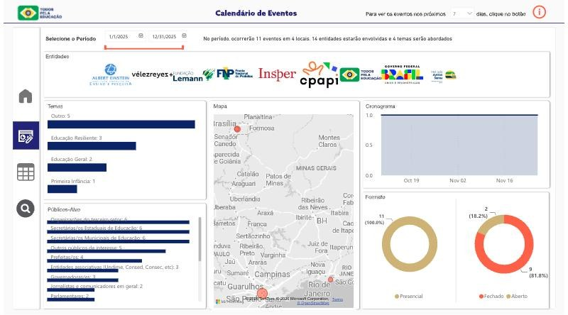

Todos Pela Educação
BI consultant, project-based, 2023 to present
One of Brazil's leading education-policy organizations. I build the reports its directorates use to coordinate partners, track policy agendas and plan advocacy, often starting by designing how the data would be collected.
- Designed data collection that turns qualitative partner input into comparable indicators.
- Delivered for non-technical audiences, such as partner organizations and the organization's own directorates.
Stack Power BI (DAX, Power Query), data-collection design, map and matrix visuals
Model and report

Municipalities Coalition27 institutions working across about 2,100 municipalities: who works where, and on which themes.

Political Actors Matrix270 officials scored on influence, decision power and support, to prioritize advocacy.

Educação Já monitoringHow a national education agenda is progressing, theme by theme, month by month.

Education NGOs by stateWhich organizations work in each state, so partners can spot overlaps and gaps.

Education events calendarSector events by organizer, theme, audience and place.